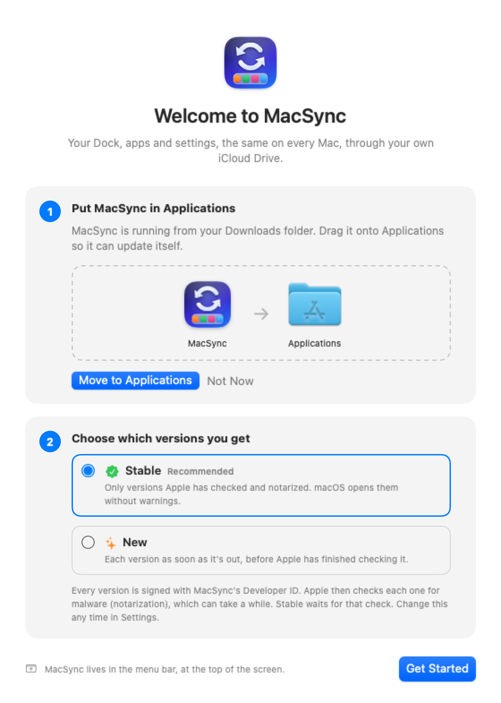
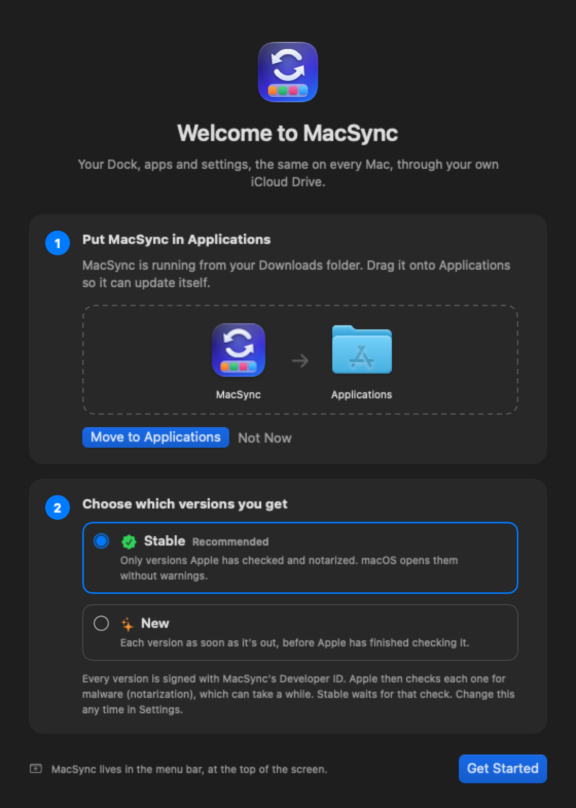

Every Mac,
set up the same.
One Dock, the same apps, the same settings, files and AI setup on every Mac you use. Through your own iCloud Drive, with nothing changed until you press Apply.
brew tap onlymoein/tap
brew trust onlymoein/tap
brew install --cask macsync- Free and open source
- Signed and notarized by Apple
- Your own iCloud Drive, no account
- macOS 13 or later


Features
Everything that makes a Mac yours
Each part has its own section in the sync window, with a switch for the whole section and one for every item.
One Dock
Add an app to the Dock on one Mac and it's on all of them, in the same order.
- Drag to rearrange, click to remove
- Pick which Mac's order wins
- Saved seconds after a change
- Applied when you open the lid, if you like
The same apps
Apps on one Mac are offered on the others, one click each or all at once.
- Homebrew apps install by themselves
- App Store apps open their page
- Downloaded apps come from the developer
- Every download checked against its checksum
The same settings
Trackpad, keyboard, Finder, hot corners and more feel the same everywhere.
- Old value shown next to new
- Keep any setting to one Mac
- The settings of apps you pick
- Passwords and keys never read
Homebrew, handled
Every Homebrew app and tool stays current on every Mac, like Raycast does it.
- Updates install on their own
- A list of what's out of date
- npm and uv tools too
- Open apps are never quit under you
Adobe apps
Photoshop, Illustrator, InDesign and the rest, kept tidy and current, on a personal plan or a company one.
- Every Adobe app and its version, in the sync window
- Remove uses Adobe's own installer and keeps your settings
- Company installs update with Adobe's updater
- Spots an older year left behind, like InDesign 2026 next to 2027
AI apps
Every well-known AI app in one list, installed and kept current on all your Macs.
- ChatGPT, Claude, Gemini, Grok and more
- Install on all Macs or this one
- Update All in one click
- Apps you don't have are listed too
Config files
Your shell, Git, editors and terminals come with you.
- zsh, fish, bash, Starship
- VS Code, Cursor, Zed, Neovim, Ghostty
- The fonts you installed
- A file with a key in it stays home
AI setup
Skills, rules and MCP servers for Claude, Codex and Cursor, on every Mac.
- CLAUDE.md, AGENTS.md, agents, commands
- MCP servers with keys taken out
- Claude Code plugins
- Checked again for secrets before it leaves
Developer setup
Xcode and Android Studio set up the way you like them, on every Mac.
- Xcode themes, key bindings, snippets
- Simulators each Mac has
- Android SDK platforms and images
- Signing files never leave the Mac
Share my setup
Give a friend your whole setup in one file, with only the parts you choose.
- Pick sections with switches
- Send with AirDrop, Messages or Mail
- They pick what to take
- Secrets left out
Remove everywhere
Remove an app from all your Macs at once, or from just this one.
- Homebrew uninstalls its apps
- Everything else goes to the Trash
- Each Mac asks before removing
- Bring Back if you change your mind
Safe by design
Nothing changes until you press Apply, and every Apply can be undone.
- Preview everything first
- A restore point before each Apply
- Go back to any of the last 20
- Updates itself while you work
Ready to work
The same apps open at login, extensions are in place, and a list helps you sign in.
- Login items
- VS Code and Cursor extensions
- Steam games, through Steam
- A sign-in list, password manager first
Every option
You decide what syncs
These are all of MacSync's options. Try the switches: they're the same ones you'll find in the app, and nothing here touches your Mac.
Inside the app
The sync window, section by section
Every section folds open and shut. Your choices wait at the bottom until you press Apply.
The menu bar menu
Click the MacSync icon at the top of your screen.
- Each Mac, when it last saved, and which has the latest changes
- Warns when a Mac needs a MacSync update
- Updates for apps, tools and MacSync in one place
- Sync, History, Share, Import, Coffee and Settings along the bottom
Homebrew, handled
Every app and tool, up to date on every Mac
MacSync keeps Homebrew apps and command-line tools current, the way Raycast does, and tells you what changed.
- Install something with Homebrew on one Mac and the others offer it
- Each Mac checks when MacSync opens and every six hours
- Apps, command-line tools, and apps that update themselves
- npm global packages and uv tools are kept current too
- An open app is never quit under you: it waits, with Quit and Update
- Rather choose? Turn automatic off and get a list, with Update All
- Uninstall on one Mac and the others offer to remove it, or keep it
- AppVisual Studio Code1.105.0 → 1.106.1Waiting
- Toolffmpeg8.0 → 8.0.1Waiting
- npmvercel48.2.0 → 48.4.1Waiting
- AppRaycast1.103.2 → 1.104.0Waiting
AI apps
Every well-known AI app, on all your Macs
One list of the AI apps people use, whether you have them yet or not. Install one or all, and Update All when a newer one is out.
Homebrew installs most of them. Grok and Muse from Meta open their App Store page. Apps that update themselves, like ChatGPT and Claude, are handed to Homebrew so they stay current too.
Developer setup
Your developer setup, on every Mac
Xcode and Android Studio feel like home on any Mac: the same themes, keys and templates, and the same simulators and SDKs ready to install.
Xcode
- Color themes
- Key bindings
- Code snippets
- File and project templates
- The simulators each Mac has, with Get for the missing ones
Never copied: Provisioning profiles and signing certificates.
Android Studio
- Keymaps
- Code styles
- Color schemes
- Live templates and file templates
- SDK platforms, build tools and system images, through Google's sdkmanager
Never copied: adb keys and keystores. Licenses are never accepted for you.
Always shows its work
See exactly what it's doing, and what's next
A bar while it installs, removes or updates: how many are done, what's happening now, and what comes next. In the window and in the menu bar.
- Ghostty Installed
- RaycastDownloading 42%
- btopWaiting
- ripgrepWaiting
- PhotoCraftWaiting
ArtCraft
The whole ArtCraft suite, on every Mac
MacSync reads ArtCraft Launcher's own catalog, so every Craft app is there, and new ones appear as ArtCraft adds them.
- Install All, Update All, or one at a time
- Remove from all Macs, or this one
- Checked against published checksums and the signature
- Installed in the launcher's own folder and recorded in its list
How it works
Three steps, all on your Macs
- 1
Each Mac saves its setup
- A small file per Mac in your iCloud Drive
- Dock, apps, chosen settings and files
- Updated seconds after a change
- 2
The others see what's new
- Apps to add, Dock changes, settings
- All in one window, grouped
- The menu bar icon tells you
- 3
You press Apply
- A restore point is saved first
- Undo in one click
- Or go back to any of the last 20
Install
Download, drag, done
MacSync comes as a disk image. Drag it into Applications, open it, and the welcome window walks you through the rest.
- 1
Download
- A disk image, notarized by Apple
- Or install with Homebrew
- Free, for macOS 13 and later
- 2
Drag into Applications
- The window shows where it goes
- Opened from Downloads? The welcome window moves it
- So it stays put and updates itself
- 3
Pick your versions
- Stable: only versions Apple has notarized
- Beta: each version as soon as it's out
- Change it any time in Settings
Stable Recommended
Only versions Apple has checked and notarized. macOS opens them without warnings. The download button and Homebrew always give you Stable.
Beta Early
Each version as soon as it's out, signed with MacSync's Developer ID, before Apple has finished checking it. Only offered inside the app.


Privacy
What syncs, and what never does
Everything lives in your own iCloud Drive. There's no server and no account.
Kept the same
- Dock apps, order, icon size and position
- Apps from Homebrew, the App Store and developers
- Command-line tools, npm and uv tools
- System settings and the app settings you pick
- Hot corners, input sources, shortcuts, gestures
- Config files, fonts, AI skills and rules, MCP servers
- Login items, extensions, Claude Code plugins
- Xcode and Android Studio setup, simulators, SDK packages
Never copied
- Passwords, tokens, API keys and license keys
- SSH and GPG keys, ~/.aws, shell history, .env files
- Provisioning profiles, keystores, adb keys
- Window positions and per-Mac details
- Your documents, photos and projects
- The apps themselves: they come from where they're published
Keyboard
Raycast and Terminal too
Raycast commands
And macsync:// links open the window, History or Share.
The macsync command
# each Mac and whether it's in sync
macsync status
# what applying would change, then apply it
macsync preview
macsync apply
# go back
macsync undo
macsync restore-points
# Homebrew: what's out of date, then update it all
macsync outdated
macsync upgrade
# what this Mac shares, and what it keeps back
macsync filesQuestions
Good to know
macOS says it can't verify MacSync
The download button gives you a version Apple has already notarized, so this shouldn't happen. If it does, open System Settings → Privacy & Security and click Open Anyway, then open MacSync again.
What are Stable and Beta?
Two ways to get updates. Stable waits until Apple has notarized a version. Beta gets it as soon as it's out, before Apple has finished checking it. Every version is signed with MacSync's Developer ID either way. Pick one in the welcome window or in Settings, MacSync Versions.
Do I need an account or a server?
No. MacSync only uses your own iCloud Drive. Turn on iCloud Drive on each Mac, signed in to the same Apple Account.
Will it delete my apps?
Only when you ask. Remove from All Macs uninstalls an app after you confirm, and each other Mac asks before removing it there. Homebrew uninstalls its own apps; anything else goes to the Trash.
Why does an app say Install in Terminal?
Some installers, like Docker Desktop or Adobe's, need your Mac password. MacSync never types a password, so it opens Terminal with the install ready and you type it there. Several at once share one window.
How does it install apps I downloaded myself?
It finds where the app is published, through Homebrew's public list or the app's own update feed, downloads it from there, checks it, and installs it or opens the installer.
Does it sync Xcode and Android Studio?
Their settings, themes, key bindings and templates, plus the simulators and Android SDK packages each Mac has. Never provisioning profiles, keystores or adb keys, and Android licenses are never accepted for you.
Does it work with ArtCraft Launcher?
Yes. Craft apps install into the launcher's folder and are recorded in its list, so the launcher shows them and keeps them updated.
What if I don't like a change?
Press Undo in the menu, or open History and restore any of the last 20 applies. Installed apps stay installed.
How does it stay up to date?
MacSync checks for a new version when you open its menu and every ten minutes, and installs it once it isn't busy. Turn that off in Settings, or click Check in the menu.
Is it open source?
Yes, under the MIT license. The code is on GitHub, and this page's glass is liquidglass, from the same GitHub.
The glass on this page
Made with liquidglass
Every piece of glass here, from the bar at the top to the switches, is liquidglass: Liquid Glass for the web that bends the light behind it, from the same GitHub as MacSync. It's free and open source, so you can use it too.
Tune the glass
Like the setting on iPhone. It changes the whole page, and is remembered.
Use it in your own site
For React, and React Native with @onlymoein/liquidglass-native. Buttons, switches, sliders, menus, sheets, tab bars and more.
npm install @onlymoein/liquidglassMacSync is free. Coffee keeps it going.
If it saved you an afternoon of setting up a Mac, a coffee says thanks and pays for the next feature.